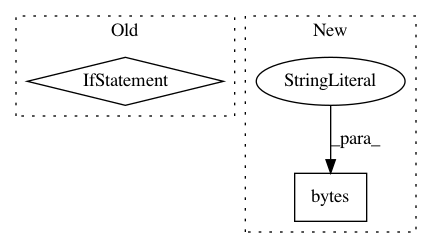

b94aa17ae3d01299e301e425d3f797a9f5b00ea8,muselsl/muse.py,Muse,select_preset,#Muse#Any#,236
Before Change
Default is "p21".
if preset == 20:
self._write_cmd_str("p20")
elif preset == 22:
self._write_cmd_str("p22")
elif preset == 23:
self._write_cmd_str("p23")
After Change
preset = str(preset)
if preset[0] == "p":
preset = preset[1:]
preset = bytes(preset, "utf-8")
self._write_cmd([0x04, 0x70, *preset, 0x0a])
def disconnect(self):
disconnect.
In pattern: SUPERPATTERN
Frequency: 3
Non-data size: 2
Instances
Project Name: alexandrebarachant/muse-lsl
Commit Name: b94aa17ae3d01299e301e425d3f797a9f5b00ea8
Time: 2021-02-14
Author: 0xloem@gmail.com
File Name: muselsl/muse.py
Class Name: Muse
Method Name: select_preset
Project Name: HendrikStrobelt/Seq2Seq-Vis
Commit Name: 9a5bcc9c1bb6a3dbeaf6a1e32a0996f270069164
Time: 2017-08-17
Author: s.gehrmann@outlook.com
File Name: model_api/opennmt_model.py
Class Name: ONMTmodelAPI
Method Name: translate
Project Name: OpenNMT/OpenNMT-py
Commit Name: 63871d5ab3301d015805abddd8f4259680d6a24a
Time: 2017-09-21
Author: bpeters@coli.uni-saarland.de
File Name: translate.py
Class Name:
Method Name: main